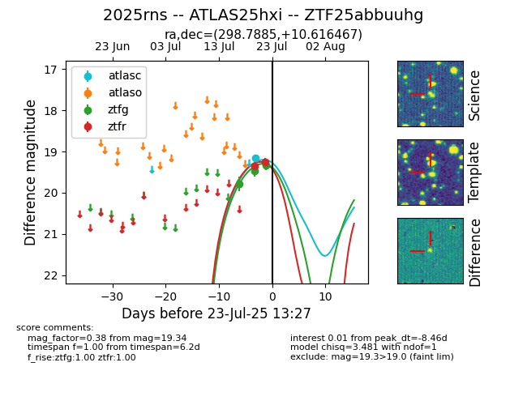

Target ZTF25abbuuhg at 2025-07-23 13:27, see:
FINK: fink-portal.org/ZTF25abbuuhg
Lasair: lasair-ztf.lsst.ac.uk/objects/ZTF25abbuuhg
ALeRCE: alerce.online/object/ZTF25abbuuhg
TNS: wis-tns.org/object/2025rns
YSE: ziggy.ucolick.org/yse/transient_detail/2025rns
alt names
ZTF25abbuuhg (ztf,fink)
2025rns (tns,yse)
ATLAS25hxi (atlas)
coordinates:
equatorial (ra, dec) = (298.7885,+10.61647)
galactic (l, b) = (49.8214,-8.97857)
photometry
last atlasc=19.16, ztfg=19.34, ztfr=19.25
1 atlasc, 3 ztfg, 2 ztfr detections
